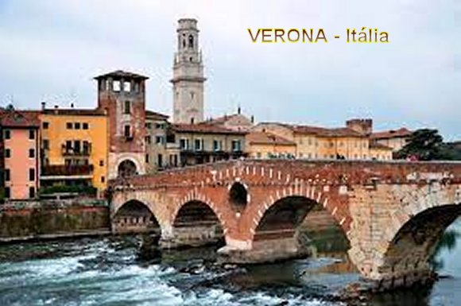
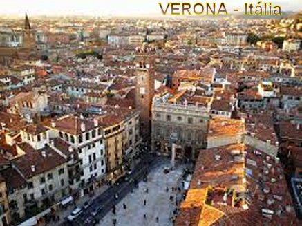
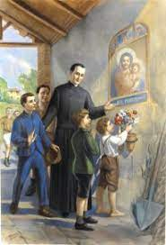
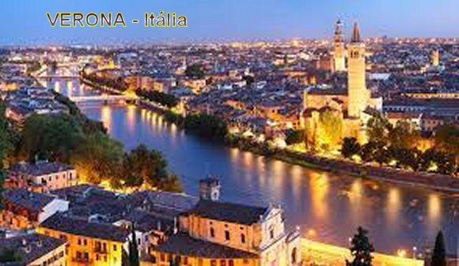
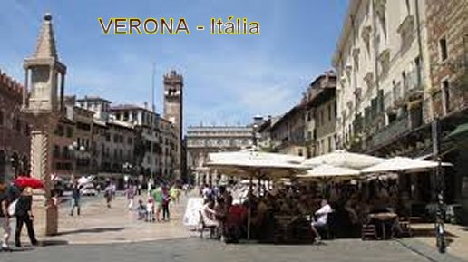

“ESCOLHIDO
POR DEUS”

A FAMÍLIA
Gaspar nasceu no dia 9 de
Outubro de 1777, em Verona, e foi Batizado no dia seguinte pelo tio Padre Tiago,
na Paróquia de São Paulo no Campo Marzo, na Itália. Sua mãe, a senhora Brunora
Ravelli, embora sendo de família simples e humilde, era uma mulher trabalhadora,
honesta e responsável nas suas decisões. O pai, senhor Francisco, era
extremamente nervoso e brigão, tinha o gênio muito difícil e não teve a
capacidade de administrar os muitos bens da família; em consequência de seu
gênio violento rompeu amizade com todos os parentes. Vivia praticamente isolado.
Gaspar era um menino alegre e muito obediente. Aos 9 anos de idade perdeu a sua
irmã Matilde que morreu com varíola, e deixou muita saudade na família. Após a
morte de Matilde, como filho único, passou a receber maior atenção e uma melhor
educação no lar e nas escolas municipais. Naquele tempo, as Escolas eram
dirigidas pelos Jesuítas, em especial pelo Padre Luís Fortis, que posteriormente
tornou-se superior geral da Companhia de Jesus em Verona, e teve grande
influência na formação de Gaspar.
OS ESTUDOS

No Colégio em Verona cursou
o primeiro grau e onde, na continuidade, se iniciou nos estudos de Humanidade com
15 anos de idade. Fez a Primeira Comunhão Eucarística no final de 1788 com a
idade de 11 anos, dilatando vigorosamente em seu coração um grande amor que
cultivava por JESUS SACRAMENTADO. E por isso mesmo, como reflexo do seu
apaixonado amor pelo FILHO DE DEUS, além de procurar a Igreja e rezar com
frequência, demonstrava a DEUS a sua permanente busca do Amor Divino,
insensivelmente demonstrado através da ajuda que carinhosamente prestava aos pobres e
necessitados. Esse piedoso comportamento despertou a atenção do Padre Francisco Girardi
que era o Pároco da Igreja de São Paulo e que diariamente observava a religiosidade
dele. Quando Gaspar completou 18 anos de idade, Padre Girardi convidou-o
para ser seminarista, a fim de se tornar um Sacerdote. O rapaz viu naquele convite,
uma manifestação do desejo Divino, e por isso mesmo não hesitou; no dia 3 de
Novembro de 1795 começou a frequentar o Seminário como aluno externo, fazendo o
Curso de Teologia. O professor de Moral Padre Nicolau Galvani, era o seu Diretor
Espiritual.
POLÍTICA E INVASÃO
O ambiente político naqueles
anos, abrangendo grande parte da Itália, estava em plena ebulição. Verona na
época pertencia a Republica de Veneza, e se situava bem perto da fronteira com a
França e com a Áustria, sendo o seu domínio disputado pelos franceses e
austríacos. O exército de Napoleão Bonaparte vitorioso que atravessava a Itália
de Norte a Sul, não encontrava nenhum obstáculo a sua marcha destruidora, e
assim, ocupou Verona em 1796. Mas a reação dos veroneses se fez presente, e na
Páscoa de 1796 ouviram-se os primeiros tiros da resistência local. Todavia, o
exército francês era grande e poderoso e logo ocupou a cidade de Verona. Nesta
época Gaspar já era Clérigo. Todavia, pelo “Tratado de Campoformio” no dia 17 de
Outubro de 1797 foi “selada a
venda” do Estado Vêneto à Áustria, e a cidade
de Verona foi ocupada pelos austríacos em Janeiro de 1798. Em consequência os conflitos
aumentaram, agora entre os franceses e os austríacos, e os italianos no meio do fogo
cruzado; era uma preocupação diária. Dessa abominável guerra aconteceu o
“Tratado de Lunoville” em 9 de Fevereiro de 1801, determinando que a cidade e as
terras de Verona fossem divididas: aos franceses coube o centro histórico que
ocupava uma área com cerca de 36.000 habitantes, e aos austríacos, todo o lado
esquerdo, numa grande área onde estavam os Castelos e aproximadamente 20.000
habitantes, daí o nome de
“Veronetto”. Entretanto, mesmo assim não
viveram em paz, e a guerra existiu por muitos anos.
Em 20 anos de violência, Gaspar
com seus companheiros seminaristas atendia aos Hospitais, servindo os feridos e
doentes, e também, na continuidade não abandonava os estudos Teológicos. Nos
horários disponíveis se
empenhou como Catequista na Paróquia de São Paulo. Com 21 anos de idade concluiu
os estudos teológicos e no dia 9 de Março de 1799 recebeu o subdiaconato; um ano
depois no dia 12 de Abril de 1800, foi ordenado diácono. Infelizmente, neste
mesmo ano, depois de muitos desentendimentos na família, aconteceu a separação
definitiva de seus pais, decidida de comum acordo entre eles. Ainda neste mesmo
ano de 1800, no dia 20 de Setembro, aconteceu a sua ordenação sacerdotal,
próximo de completar a idade de 22 anos.

GASPAR SACERDOTE DO ALTÍSSIMO
Em face dos conflitos e
violências que diariamente agitavam Verona, Padre Gaspar que havia tomado a
decisão de cuidar dos jovens da Paróquia de São Paulo, deparou com um quadro
triste e dramático: os contínuos combates entre franceses, austríacos e
italianos, reduziram a miséria a maior parte da população. E quem sofria mais
eram os jovens, que não podiam estudar porque as Escolas estavam fechadas;
também ocorreu o fechamento de todas as atividades comerciais, provocando
desemprego e principalmente faltas de mercadorias, porque não havia
abastecimento. Um problema verdadeiramente muito sério. A mendicância aconteceu
em todas as áreas da cidade. Em consequência surgiram os trombadinhas, ladrões
de todos os tipos. Eram grupos de meninas e de meninos que se espalhavam pela
cidade fazendo arrastão, trazendo medo e terror para todos.
OS ORATÓRIOS
Padre Gaspar diante dessa
realidade rezou muito e encontrou a maneira ideal de lidar com o problema.
Passou a se interessar pelos jovens, a fim de educá-los e prepará-los para as
adversidades da existência.

Iniciou sua Missão procurando
estar no meio deles, dos jovens, reunindo-os e incentivando-os com boas leituras
bem sólidas e apropriadas exortações espirituais, também com momentos de
entretenimento e jogos para animá-los. E assim, gradativamente o grupo foi
crescendo com o tempo. Ele com entusiasmo criou os Oratórios, cuja finalidade
além de preparar os jovens para a Santa Missa e o Catecismo, ensejando a
oportunidade deles santificar o espírito. No caso presente também serviu para
entreter e reter os jovens durante todo o dia, com cantos e jogos, não se unindo
a outros sem juízo e com más intenções.
E por isso também, logo
estabeleceu metas para aguçar o interesse dos jovens. Todos aqueles matriculados
nos Oratórios deviam se distinguir pelo esforço e constância, serem aplicados,
frequentando pontualmente a Escola ou se preparando para serem encaminhados para
as “Artes e Ofícios”.
Padre Gaspar partia do seguinte e lógico princípio:
“Um jovem que se doou a DEUS
devia revelar isto claramente, com sua vida, com suas atitudes e com toda a sua garra”.
Os frutos logo apareceram, as
famílias se empenhavam para que os seus filhos estivessem matriculados no
Oratório. E por outro lado, nas firmas na cidade, quando os patrões percebiam
que um jovem era recomendado pelo Padre Gaspar, ficavam felizes em recebê-lo em
sua oficina.
E por isso mesmo, a procura de
vagas aumentou e Padre Gaspar montou diversos Oratórios em lugares estratégicos
nos Bairros. O primeiro foi o Oratório São Paulo, que se tornou famoso em toda a
cidade; depois veio o Oratório de São Estevão, dos Santos Nazário e Celso, de
Santa Anastácia e Oratório de São Jorge.
Para os Oratórios ele instituiu
uma estrutura particular que chamou “Coorte Mariana”. Isto, em razão
da particular e sempre atenciosa proteção que “NOSSA SENHORA”concedeu aos seus jovens.
Esta idéia, que precedeu a evolução dos tempos, foi assumida em nosso século pelo
movimento da
“Ação Católica”.
CONQUISTOU OS ENCARCERADOS
Naqueles tempos os cárceres
estavam superlotados: presos políticos, delinquentes, menores desviados, e
pessoas com vários tipos de transgressões, que só faziam multiplicar os
incômodos e as violências no quotidiano.
Padre Gaspar visitava e
confortava os encarcerados, exortando com doçura e palavras inteligentes,
levando-os não somente a suportar com paciência o castigo merecido, mas a
agradecer ao SENHOR DEUS, porque, na sua sabedoria e caridade, serviu-se daquele
meio para reconduzi-los ao caminho certo, dando-lhes um presente maior:
“a Graça de DEUS”.
Por outro lado, em face de
sempre haver muitos doentes na cidade, no ano 1806 as autoridades públicas
decidiram abrir um pequeno hospital perto da “Torre del Bartello della Vitoria”. Todavia, os recursos disponíveis eram irrisórios. E por
outro lado, se era difícil conversar e evangelizar os encarcerados sadios imagine-se
querer evangelizar aqueles que estavam doentes: eles multiplicavam as imprecações
por uma vida privada, maldizia a DEUS por um destino tão amargo, e muito outros
xingamentos. Então foi chamado o Padre Gaspar, pelo interesse e o empenho que
havia demonstrado em beneficio desta humanidade humilhada e sofredora. Ele não
perdeu a coragem: em companhia do médico responsável, começou um trabalho de
assistência e de conforto, que levou um pouco de serenidade e de resignação
a tantas almas sofredoras
OS GOVERNANTES FRANCESES
INTERFEREM

Todavia em 1807 a administração
local dos franceses proibiu as atividades das Associações Religiosas. Então,
Padre Gaspar adiou a expansão dos seus projetos para tempos melhores e mais
tranquilos.
ENSINANDO E ORIENTANDO
Em Maio de
1808, ele assumiu a direção espiritual da obra de Santa Madalena de Canossa, na
casa de São José. Neste mesmo local começou a orientar também a Serva de DEUS
Leopoldina Naudet em seu crescimento espiritual e na sua caminhada existencial
em vista de edificar um instituto religioso, que recebeu o nome de
“Irmãs da Sagrada Família”.
Também auxiliou igualmente, outra Serva de DEUS,
Teodora Campostrini, orientando-a em sua vocação religiosa e apoiando-a na
fundação de outro Instituto Religioso Feminino.

 - PRÓXIMA
PÁGINA
- PRÓXIMA
PÁGINA
- RETORNA
AO ÍNDICE